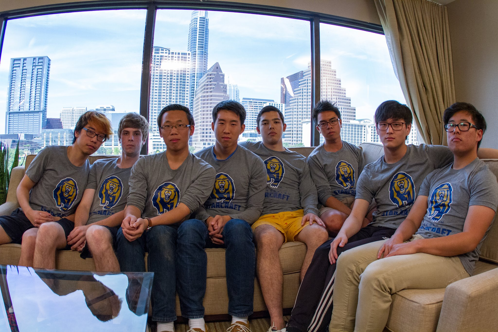
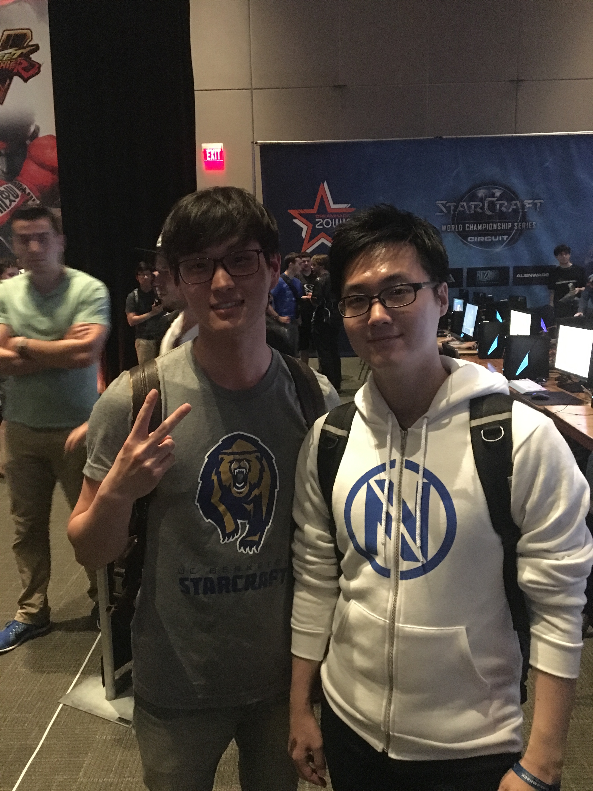
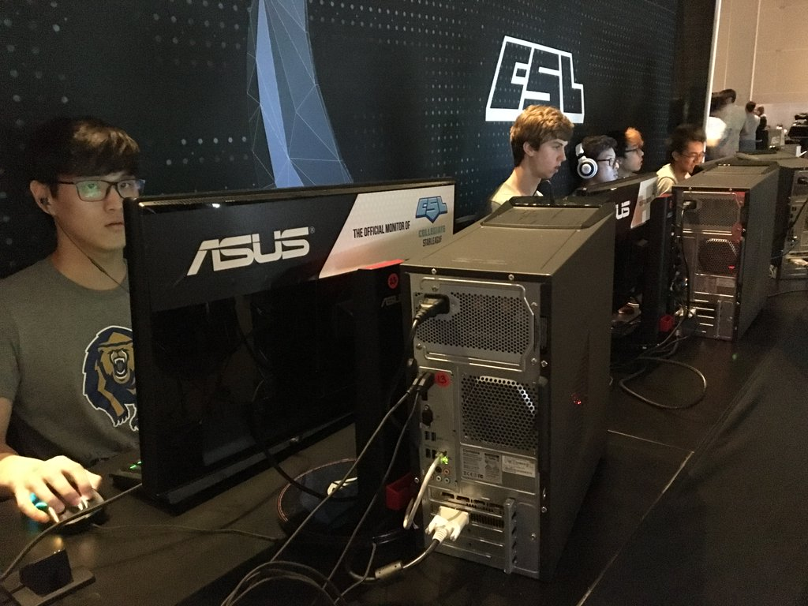
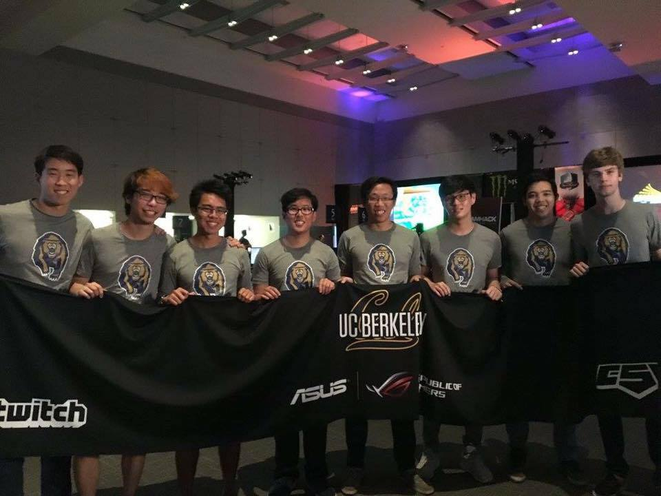

As I am a huge gamer, I have been in UC Berkeley's StarCraft team ever since I was a freshman, playing in collegiate starleague, which is a tournament for college students fighting for a big prize and glory. This season, UC Berkeley's StarCraft team advanced to the Grand Finals, which took place in DreamHack Austin for an offline final, meaning that we would all fly over to Austin, Texas, stay in hotel for 3 nights, and play at a grand stage in one of the biggest eSports event. UC Berkeley has a history of 3 Championship titles and 1 Finalist title, and as we were going against Temple University, that has no history in collegiate StarCraft, we were the big favorites. Pressure was definitely on us, as thousands of people have been following us in the news and cheering for us on stream and in the tournament.
Our flight was on Thursday 6:20am from Oakland Airport to Austin Airport, and it was painful to even wake up that early for a flight. I'm one of those people who sleeps for about 11 hours a day, even during school days, and cannot function if I get significantly less. Furthermore, it was a layover flight, with about 1 hr of layover in Long Beach. So even though we left at like 4:20am for the flight, we arrived at Austin at 1:30pm, and thats not including the 2-hour timezone gap... But nevertheless, we arrived in the hotel in Austin safely, and the hotel was simply amazing. The Hyatt Regency at Austin was a 4-star hotel, and the room, the views, and the people were simply amazing I can't applaud enough with words. CSL did a great job that we would not have to worry anything but our Grand Finals match. As soon as we arrived at the hotel, we had an interview scheduled with CSL. As a group of goofballs and trolls, the interview was just full of laughters and jokes. Hopefully the CSL weren't too upset with our troll level.

Our match against Temple University was scheduled to start at 9:00pm, so we had an entire day to spend. Because I had 5 final exams lining up next week, my initial plan was to study a little bit. But the StarCraft booth at DreamHacks was so wild and exciting, I just YOLO'd my studying and decided to join my team watching the entire tournament live. There, I met incredibly famous StarCraft pros, like Polt, Violet, Hydra, and MaSa. In fact, got to take a picture with Polt! Super worth.
Finally, it was our turn to play. 30 minutes before going live, our team was given 5 computers to warm up. Funny enough, my computer was recently formatted, so nothing was downloaded. LOL. So I downloaded Razer Synapse (I'm probably the only StarCraft player that truly relies on this stupid software...) and StarCraft, which in total took like 5 minutes. LOL. I knew Internet at DreamHack would be pretty good, but not THIS good. This was like Google Fiber speed. Anyhow, Jono and I started to practice in custom 2v2 against AIs, and just practice our build.
It was an "of course" thing to hide our match history so that the opponent wouldn't just look up our match history build and try to counter build it. However, Temple University did not hide their match history, and I immediately saw that they were practicing a proxy 3-rax marine and speedling rush. LOL. So I just told Jono about it, and we decided for an early scout, and I immediately spotted the Temple University's Terran's 3 proxy barracks. That scout literally won us the game. Although Jono and I were super happy that we won our match, we were so sad because we weren't able to showcase our build and the amount of time we practiced before coming into this Grand Final. Neverthelss, UC Berkeley was then able to take its 4th CSL StarCraft Championship Title.

It was actually my first time in Texas, and I knew nothing about the state except that they have cowboys, a lot of Mexicans, and say "y'all" all the time. Here is what I learned: 1) even if there are many cowboys in Texas, there aren't many in the city. 2) There are more Mexican food restuarants than actual Mexicans. 3) They actually say "y'all" all the time... Food was mediocre; everything that showed up on Yelp was hamburger, sandwich, hot dog, taco, and more hamburger... There was not much diversity, as you can see... I was craving for Asian food as soon as I came back to Berkeley. But now that CSl was done, and now that it was already Friday, it meant that I'm pretty much fucked for my finals that start on the following Tuesday... At least going to the DreamHack Austin was hell of an experience.